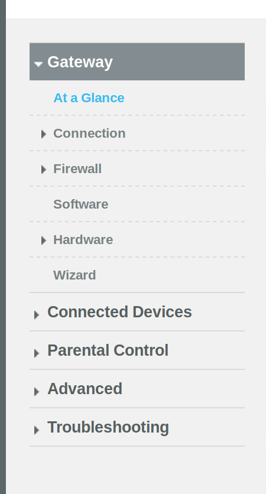
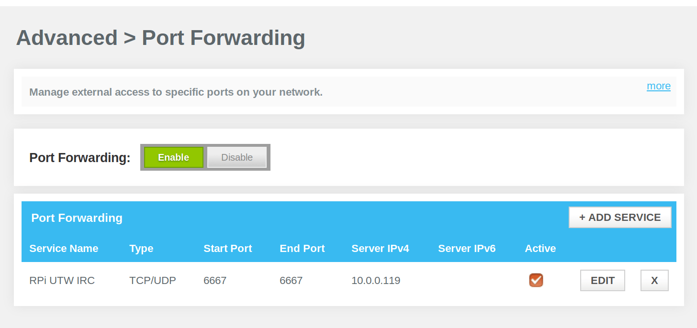
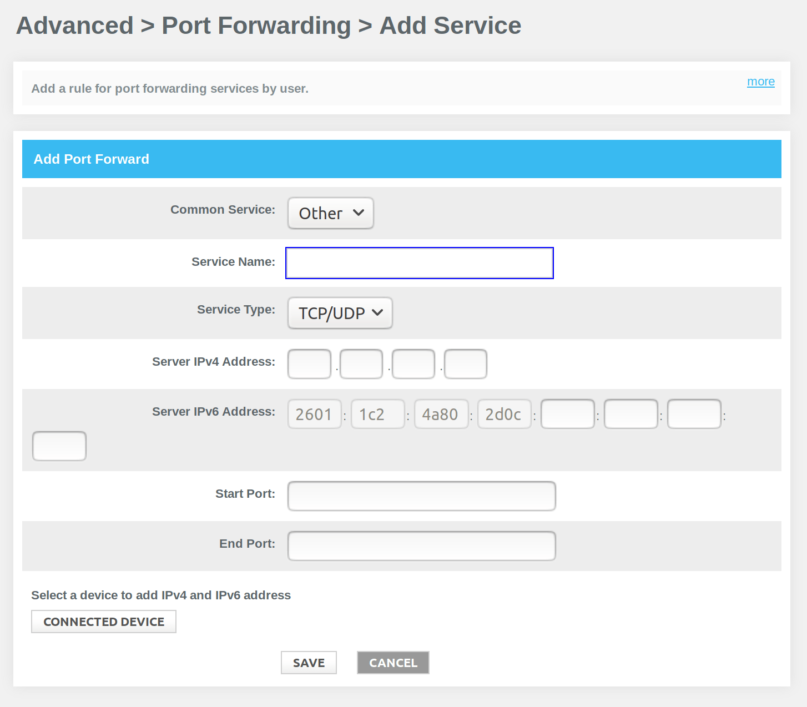

[12.2.17]
Raspberry Pi IRC Server
As UTW is growing, we're getting closer and closer to using a better platform for chatting (we've been using Discord up to this point, which has been fantastic). To get practice in networking ideas and to use my old Raspberry Pi B+, I decided to set up a small IRC server.
I found this tutorial at Pi My Life Up: https://pimylifeup.com/raspberry-pi-irc-server/
It covered the basics, but not all of them, so I thought I'd make a tutorial and document what I've done as well.
As always, I started with sudo apt-get update and sudo
apt-get upgrade.
Next, I installed a software called Ircd-Hybrid, “A lightweight, high-performance internet relay chat daemon". Perfect for the raspberry pi!
The next step requires you to make a
password, and have something to copy/paste it, or have something to
write it down.
Using /usr/bin/mkpasswd password, replace "password"
with your preferred and secret password, hit enter, and it should
return an encrypted, scrambled version of your password. COPY AND
SAVE THIS, we'll need it later!
Next you have to configure what you actually want your server to do, say, be named, etc. To access the configuration file, run:
sudo nano /etc/ircd-hybrid/ircd.conf
There's a lot to look at in this config. It overwhelmed me at first, but as long as you take it one block at a time, it's fairly easy to understand.
In the first block, serverinfo {, find the first line:
name = "hybrid8.debian.local";
And change it to:
name = "underthewire.irc";
In my case, I changed the name to Under the Wire, since that's the name of our group. You can change it to whatever name you wish :)
Next, find:
description = "ircd-hybrid 8.1-debian";
And change it to be similar to this:
description = "Raspberry Pi UTW IRC Server";
This is the description of what the server is, and it'll display this when you connect to the server in your IRC client (I use weechat).
Find:
network_name = "debian";
network_desc = "This is My Network";
Replace with:
network_name = "underthewire";
network_desc = "This is the unofficial test run UTW IRC Server";
This describes the network that your server is going to run on.
Now skip down past the admin, log,
and class blocks until you find the listen
block.
In listen, change the host line to your
local IP address.
Next, find the auth block.
in:
user = "*@127.0.0.1";
You can replace it with:
user = "*@*";
to allow all IP addresses to be able to access the server.
Within the operator block, find:
user = "*@192.0.2.240/28";
and change it to:
user = "*@*";
Finally, find the password line.
password = "xxxxxxxxxxxxx";
Replace the xs with the
encrypted password that you generated for your server near the
beginning of this post.
You should be done now, so Ctrl-x
your way out, y to save the changes.
Now we'll edit the MOTD file, which will
appear to the users once they connect to your server!
Using sudo nano /etc/ircd-hybrid/ircd.motd to get
there. You can delete all the contents of the file and write your
own messages, or keep the Debian Swirl and write over the words, or
leave it as is.
I kept the debian swirl and wrote down the rules and inside jokes of our group. :)
After saving and exiting, run sudo
/etc/init.d/ircd-hybrid restart to restart the server and
implement all your changes.
Connecting to the server was the challenging
part, but it's fairly simple once you understand how to port forward
from your router.
Since I am on my network, I hypothesized that I can't
connect to the server from the public IP since I'm already in
the network. But I'd still have to port forward so other people can
join with my public IP.
My ISP (internet service provider) is Xfinity/Comcast, so with a few screenshots I'll demonstrate how to port forward on their website.
First, you have to find your local IP
address, in which mine was 10.0.0.1. If you enter your
local IP into your browser like so:
10.0.0.1
It should take you to the router gateway.
You'll be asked to login. The username default for Comcast/Xfinity
is admin, and the default password is password.
It took me way too long to figure that out...but once I
did, I changed the default password.
After you've logged in, it should look something like this on the top lefthand side:
Click on Advanced, and the drop down menu will have a Port Forwarding option.
That will take you to a screen that looks like this:

Make sure you've clicked on Enable.
After that, click on Add Service, which will load a
scary screen like this:

For Common services there are many options depending
on what your network can do, but I left it as other for my goal.
The Service Name is where you enter a name or label
for whatever this port forward will be used for. I wrote Raspberry
Pi UTW IRC.
The Service Type I left as TCP/UDP, because I didn't
know for sure which one it would need. If you know for sure, you can
choose that specific option.
In Server IPv4 Address you place the IP address that
points to the device the server is on. If you have a UNIX-based
system, you can enter hostname -I into the terminal
and it should return its IP address.
I skipped over the Ipv6, and in the start port, 6667
and end port I put 6667. That seemed to be the most
default IRC port that I saw. Once done, click save,
and you should be done! If the changes don't take effect
immediately, a router reboot wouldn't hurt anything.
Finally, we can try connecting!
I use weechat as my IRC client. Connecting with that (as me), I ran:
/server add nameoftheircserver local-ipaddress-of-device
It looked like this for me:
/server add underthewire 10.0.0.xxx
(where the x's were numbers)
Then:
/connect underthewire
And it should run!
Now if you wanted to allow other people to access the IRC server, the syntax looks exactly the same, but they put your public IP address in place of the local IP. You can find your public IP address at ipchicken.com
And that's it! Super easy, I finished it in 2hrs with researching included. Thanks to uelen, fouric, and Gector in UTW for answering my questions as I was going through this project.
As for next steps, I'm going to put an SSL certificate on the server to make it secure, and hopefully upgrade or remake a new server once I understand more how the process works. :)
{thallia}